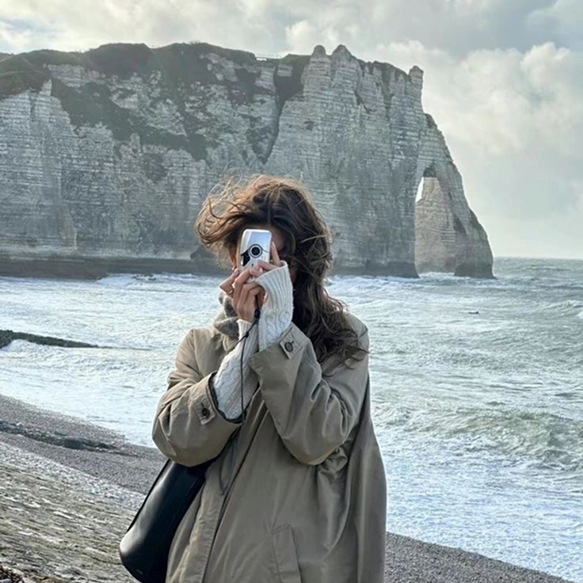
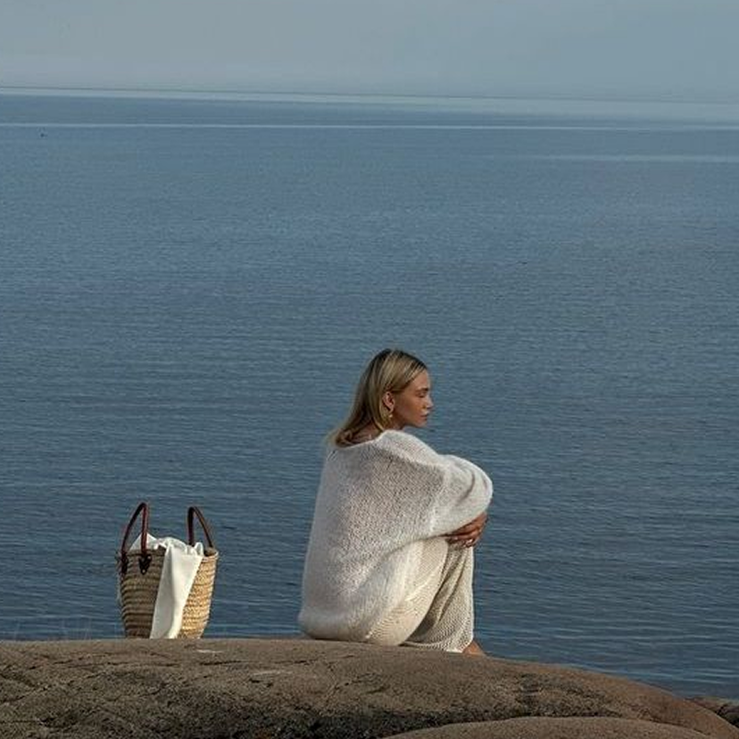
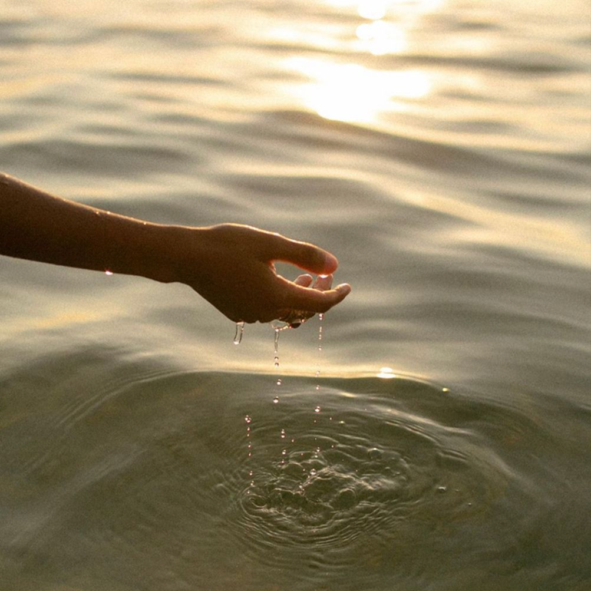
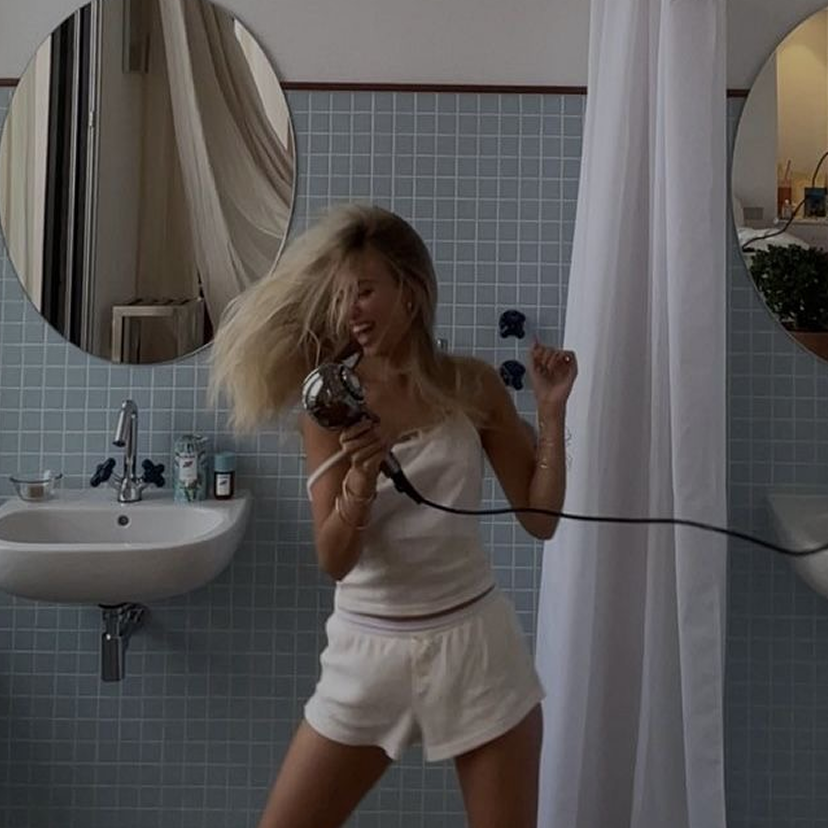
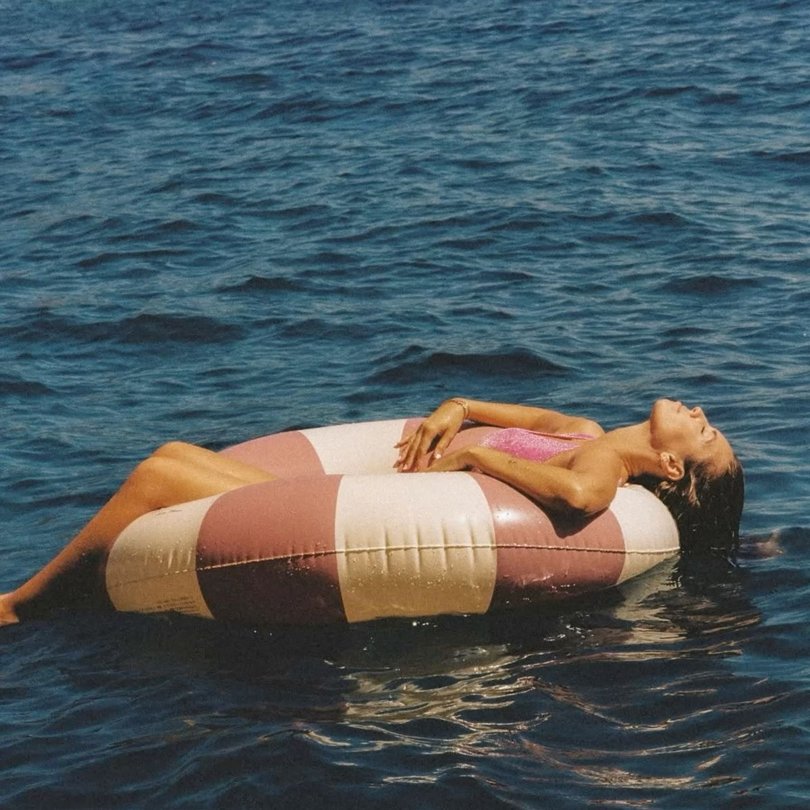

Привет! Мы — медиа о внутренних опорах и умении быть с собой. Мы говорим о спокойствии, уединении и силе, которая рождается изнутри. Берег — место, где хорошо просто быть.

Дом внутри себя
Как перестать искать покой снаружи и почувствовать, что он уже есть внутри.

Тишина — не пустота
Это место, где слышно, как ты живёшь.

Где твоя опора?
Небольшой тест, который поможет понять, на что ты действительно опираешься в трудные моменты.

Легко ли тебе быть одному?
Проверь, насколько комфортно тебе в уединении и что помогает чувствовать себя устойчивее.

Пауза на выдохе
Простая практика дыхания, чтобы замедлиться и почувствовать тело здесь и сейчас.
Искусство не спешить
О том, почему медленный ритм не признак лени, а способ вернуть себе жизнь.
Утреннее присутствие
Несколько минут тишины по утрам, чтобы начать день из состояния покоя, а не спешки.